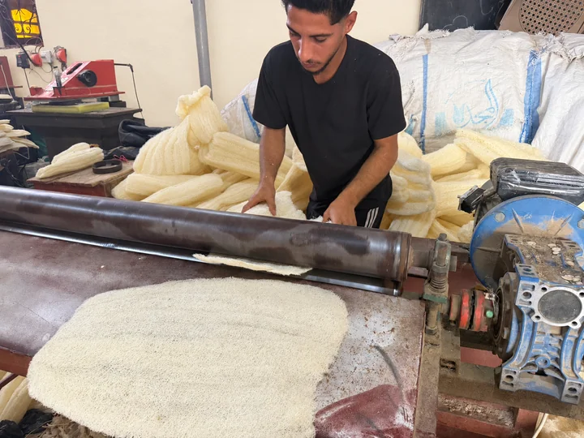

كود المنتج 101
نص كوز لوف خام بحبل
نصف كوز من اللوف الطبيعي الخام بطول ١٥ سم، مع حبل للتعليق.
- الطول
- ١٥ سم
اللوف المصري الطبيعي · صناعة وتصدير
في مصنع الفتح، تبدأ حكايتنا من مزارع اللوف المصرية. وبحِرفة أكثر من 150 عاملًا، نحول خيرات الطبيعة إلى منتجات متنوعة لشركائنا في مصر والخليج وأوروبا وأمريكا.

أهل الأرض.. وأهل الصناعة
نحن مصنع الفتح للوف المصري الطبيعي. نزرع، ونجهّز، ونصنع؛ لنقدم تشكيلة واسعة من المقاسات والأشكال والألوان والموديلات. من خامة تنمو في أرضنا، إلى قطعة تليق بشركائنا حول العالم.
المزيد عن المصنعمختارات من منتجاتنا
نصف كوز من اللوف الطبيعي الخام بطول ١٥ سم، مع حبل للتعليق.
كف استحمام يُلبس في اليد، بوجهين من اللوف الطبيعي.
رول لوف طبيعي مناسب لفرك كعب القدمين أثناء الاستحمام.
لوف استحمام كبير على شكل قلب، بظهر بشكير وشريط لتثبيت اليد.
تواصل معنا لتأكيد الموديلات والمقاسات والألوان المتاحة.

الطبيعة.. ببساطتها
اللوف نبات، وليس إسفنجًا صناعيًا. تمنحه أليافه المتشابكة ملمسًا مميزًا، وتتيح لنا تشكيله في منتجات تناسب استخدامات واحتياجات مختلفة.
جذور مصرية.. آفاق عالمية
من أرض مصر إلى الخليج وأوروبا وأمريكا، تمتد رحلة اللوف المصري إلى شركائنا حول العالم. ويدعم مكتبنا في اليونان تواصلنا الأوروبي.
رحلة من الأرض إلى المنتج
من الخامة المصرية، إلى القص والتشكيل والخياطة، ثم المنتج النهائي؛ أربع محطات في حكاية واحدة.
كميات من اللوف الطبيعي خلال التجهيز.
تجهيز القطع بالشكل والمقاس المطلوب.
حِرفة الخياطة والتجميع والتشطيب.
قطع اللوف الطبيعي بعد الخياطة والتشطيب.
نتواصل.. ونكبر معًا
سواء كنت تاجر جملة أو مستوردًا، احكِ لنا عن المنتجات والكميات التي تحتاجها، وخلّينا نبدأ الحديث.
كل وسائل التواصل